Back to blog
Placing #20th in DEFCON qualifiers 2026 – and everything else that led to it
Qu1ck5h0t, 25/05/2026
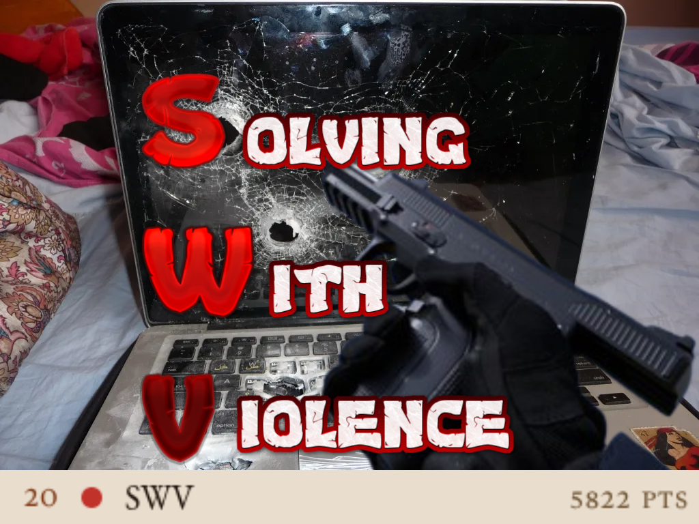
Foreword
Salutations friends, fans and stalkers. This is my first blog post and my, is it a significant one. Succinctly, as leader of my CTF team idktheflag, I was thrown into a last minute merger crisis for DEFCON quals with zero context having been inactive for my IB finals. Somehow we managed to form a superteam, and with much blood sweat and tears (including 25 hours of my life I’ll never regain), we achieved #20 on the hacker olympics qualifiers. Furthermore, I solo solved a crypto challenge within this most prestigious open CTF. That concludes my boasting on the matter so you may move on with your day now, or stick around to read my elaboration.
Part I - Teambuilding
Immediately after I finished my final IB paper, I logged on Discord for the first time in 3 weeks. This was what I was met with (rotated so it doesn’t take up the whole page):
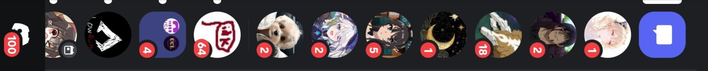
Not ideal by any means. Rather than having some well earned rest consequent of exactly 1518.75 minutes (25.3 hours) of examinations of my baccalaureate, I spent the rest of my day figuring out what was going on. Turns out, my team left DC quals preparation until the eleventh hour, and they’ve recruited a myriad of people from lord knows where but were completely void of any formal diplomatic outreach with other teams necessary to form mergers. For context, mergers are important for DEFCON due to the absence of a team size limit, and essentially all the top teams monopolise their dominance by merging with each other, making mergers an absolute necessity for smaller teams to compete. I spent the rest of my day cold emailing top Chinese teams as well as other major teams I’ve come across in the past. Nobody responded except for crazyman of r3kapig (#1 CTFtime 2025):
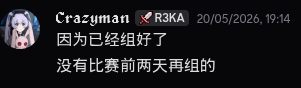
Translation: “because we already merged, nobody teams two days before the comp”
Well, they clearly aren’t familiar with the manner in which we effectuate at idk. Which is honestly an issue of mine I have to fix, but it worked well enough to get me top20 at DEFCON so the complaints can wait. Luckily, my good friend Doc of 0xfun (#7 on CTFtime as of writing) assented to the merger given his admins were amenable, so I spent Friday morning diplomatising concurrence from them.
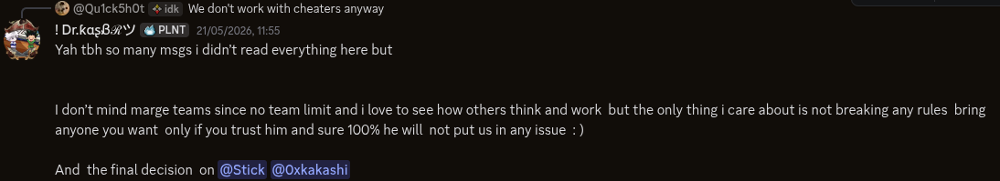
Thankfully his admins also countenanced the proposition!
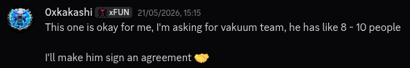
To my pleasant surprise, we gained two more teams in the alliance, TrueNomads and KSAL (both top100). Our roster was redoubtable. I don’t know why we decided on the name “Solving With Violence”, but everyone agreed that it was absolutely RADICAL!
Part II - Day1
For the first day everything went extremely well, after a rough start that is. The organisers were less responsible with their infrastructure than we thought, and in classic plaid (yes, CMU’s guys organised this one) fashion, start was delayed by 30 minutes. It was annoying because I raced back from the gym for that, but at least I got to assert my dominance in krunker. I digress. In hindsight I should’ve kept a better record of which challenges there were at the start, but it doesn’t matter since I focused my efforts purely on dissecting the crypto KoTH (King of The Hill) challenge, rfc1149b.:
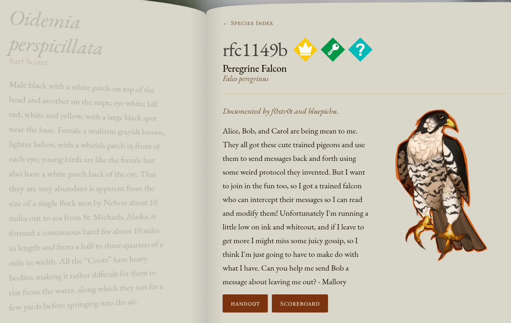
It was a very interesting challenge about communication interception, and the basic idea was that a step in key update is reversible due to multiplication with GF(2)[x] modulo a decomposable polynomial m(x). By factoring m(x), you can recover the initial key by simply finding the residue moduli for each factor and CRTing them together. A cool part about the challenge is that the communications ran on ticks, and interception/buffer releasing/malforming all costed resources called “ink” and “whiteout”. Exploits were broadcasted in real time and more points were given to exploits that used less resources. I was about to develop my first exploit when my fellows bested my pace, so I pivoted towards optimising their resource usage instead. Lord was that necessary. Euphemistically, one may describe it as “redundant” having at least 2 unused functions in the source, as well as some inefficient algorithms that I found better ones for. My co-captain river spun up a very helpful simulator to test the efficiency of our compiled exploits. Throughout the CTF, we went from this (simulated on in house infrastructure):
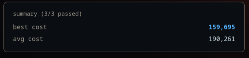
(which notably got us to 4th on the scoreboard awhile) To this (real thing):
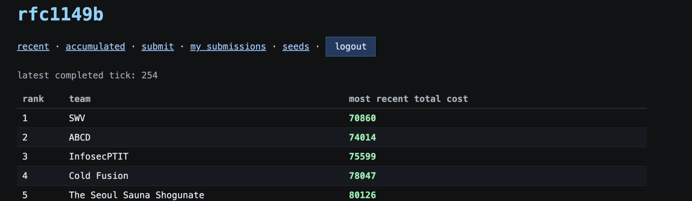
But the latter would not have happened for another 24 hours after the first. And incidentally, my consciousness departed to repose as more people from other timezones came online to solve while I slept. Onto day 2!
Part III - Day2
I arose to a beautiful sight. Two additional challenges solved while I slept and a sustained lead in KoTH. Affairs (primarily) proceeded fain and I spent the early postmeridian on sustaining my rfc1149b optimisation efforts as well as trying to organise a server wide effort to solve rfc1149a (to no avail). Then at dusk, a pure cryptography challenge was released: The Black Talon.
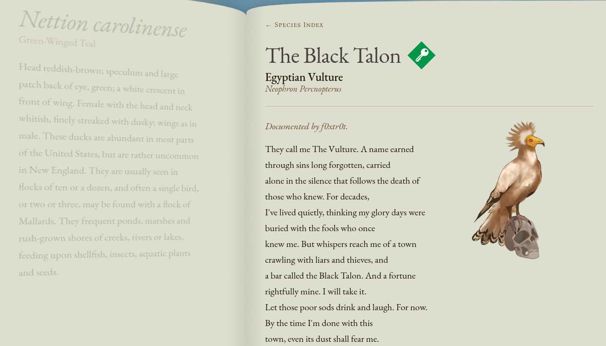
I spent the rest of my evening working towards a solution unaided. I began with analysing the programme’s functions, which was difficult given my lack of experience in rust. Eventually, I figured out that it was some sort of game where the client enters a “chat room” of initially 50 bots serving as custodians based on shamir’s secret sharing over a fixed, but unknown 4th degree polynomial. Hence, 5 shares are necessary to define said polynomial, for the secret being its constant term. The shares are distributed across the player and 9 other “randomly” selected committee members. When a committee member disconnects, a member of the room is selected through a commitment scheme between committee members, XORed together modulo the room’s member count to determine the index of the entity to join the committee and receive a share. The game asks for the secret upon exit of the room, and provides the flag upon submission of a recovered secret. The actual exploit happens due to three vulnerabilities: first the attacker recognises that the recommittee process does not necessitate that candidates are not already committee members, then the attacker is able to “kill” a bot by crashing it with malformed “direct messages” forcing a recommittee, and lastly by exploiting the mechanisms of the recommittee process. During recommittee, not all commitments have to be revealed; only 5 are necessary. By waiting for all the bots to reveal their committed random values and calculating every combination of their possible reveals against the selection algorithm, the attacker gains a greater probability of having one reveal combination match themselves being selected for the additional seat. Additionally, the attacker may broadcast an accusation that restarts the recommittee. By employing this strategy over 4 recommittee rounds, I was able to gain the necessary 5 shares to solve the secret and submit it to DEFCON’s infra for the flag.
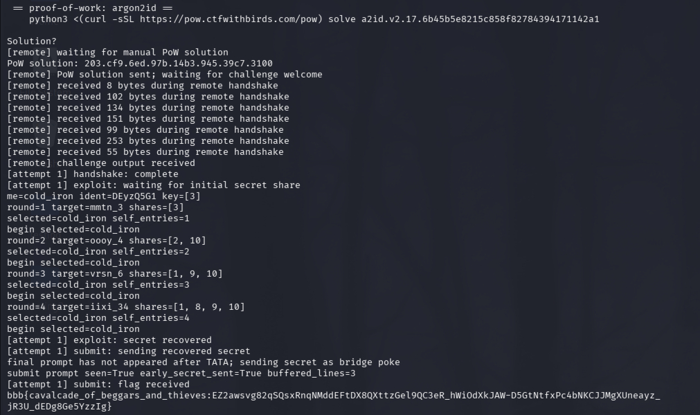
At the time of writing this, I am also writing a more in depth writeup that goes over the technical details as well as code, which will be available at https://qu1ck5h0t.github.io/ctf/writeups/DC26BlackTalon.html. As you may tell from the screenshot it was at a time quite dark and dreary outside my chambers so I withdrew for the night.
Part IV - Day 3
When I woke up on the Lord’s day, we had solved all but 5 challenges, which became four not long after. All that was left were pwn (binary exploitation), web and rfc1149a. I decided not to pursue rfc1149a, but pwn and web are my weakest areas by far. I tried to tackle coalmine revenge to no avail, being a complete noob at pwn. I didn’t even know where to start, in fact. We were down to four challenges left unsolved that afternoon and at that point people began to realise that we did not have time to solve any of them with the progress we had, so people started prematurely making their closing statements, except River whose disgrace incited opprobrium:
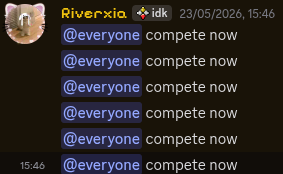
I figured I’d join in on the closing ceremonies, but not before I had to deal with another round of River-induced drama. Actually, I shall cease my descriptions regarding the actions of that diabolical child. After that we went onto design logos for SWV
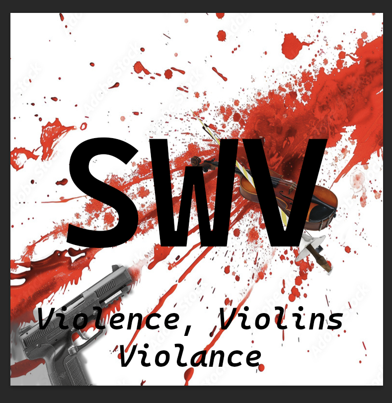
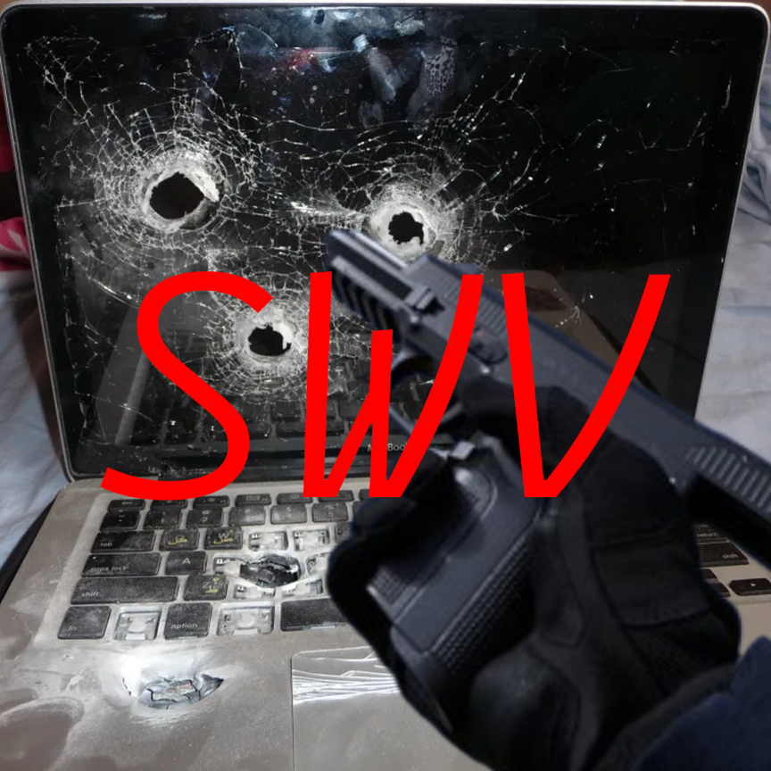
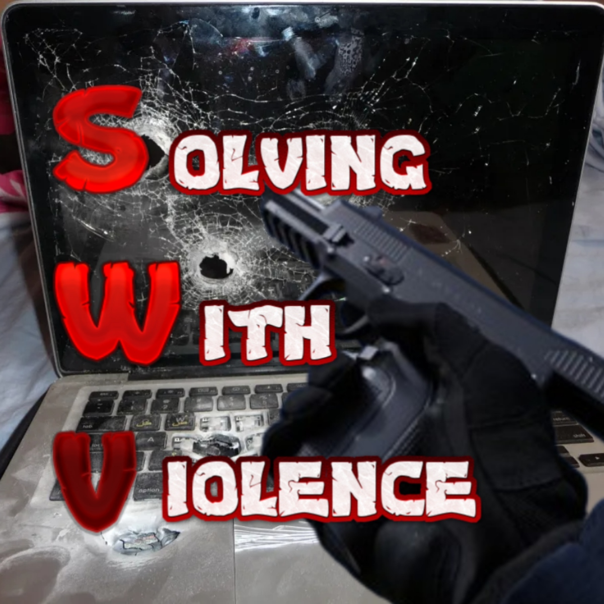
On the left are the two River designed. On the far right is the one I designed which I surreptitiously uploaded as our team’s CTFtime icon immediately afore writing this section. Which may be supplanted soon. You can clearly tell that the background image for the latter twain was overlaid by yours truly from a humorous internet picture and a call of duty screenshot. Thereafter, while I was doing bench press at the gym, I saw this on my blower:
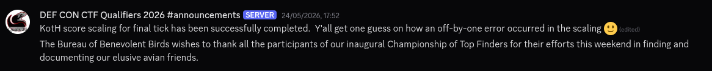
Up until that point, we remained consistently between 19th and 21st place (a tragic fall from grace of 4th place). It was no surprise that when the CTF ended 22 minutes after the 24 hour duration and 52 minutes since the original planned start, we placed #20th. Barely top 20. Nice. (with significant sarcasm) After reality set in that we were not in fact departing to Las Vegas for DEFCON CTF in August, distraught enveloped the group. Some blamed others, most blamed others actually and I made a reflections channel where our compeers may practise some well needed self-accountability, or at the very least in spirit. 0xfun, KSAL and Vakuum if you’re reading this, that last part was a joke and you have my longstanding gratitude for the amazing game we played. It was an absolute pleasure to play this with these amazing people. I will certainly cherish this wonderful memory for the rest of my life, and for once, my life was almost worth living.
Yours with esteem (with exception to interlopers),
Qu1ck5h0t
Bloopers
Our failed attempt at rfc1149a:
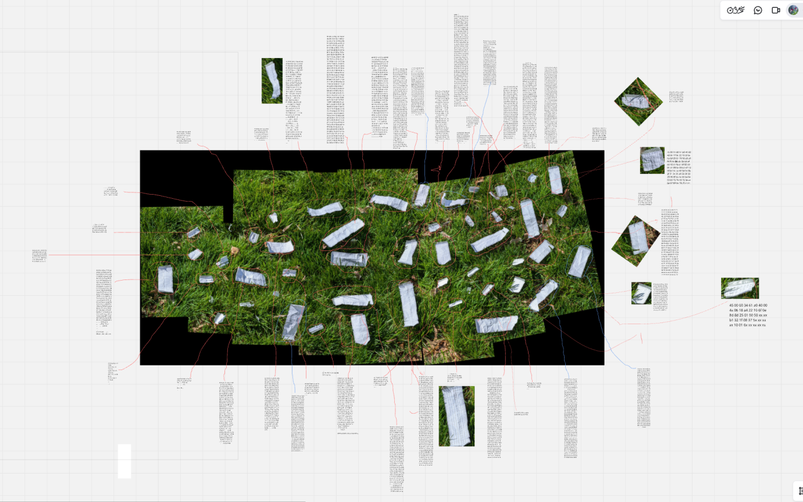
Mog battle mid negotiations with 0xfun:
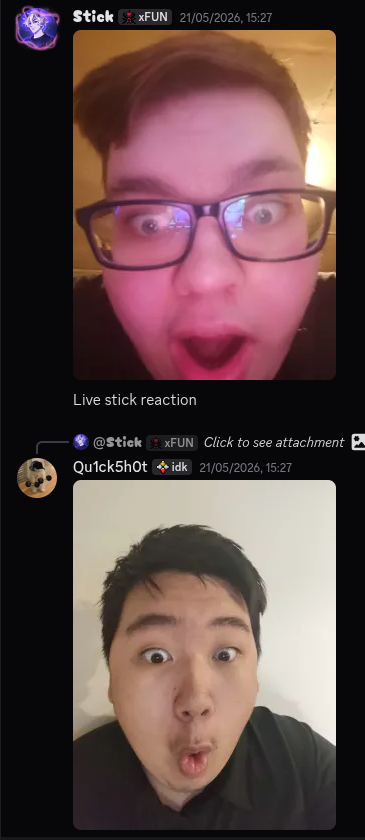
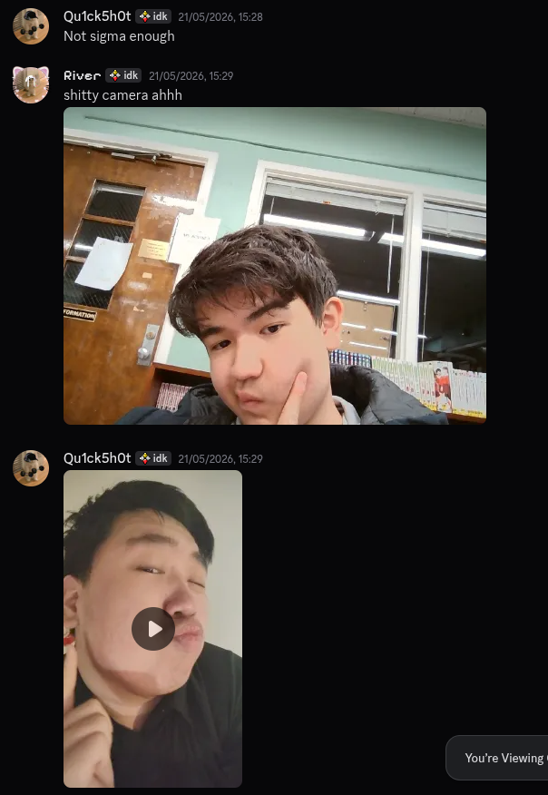
“Vroo no temperanse”:
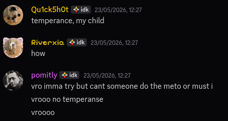
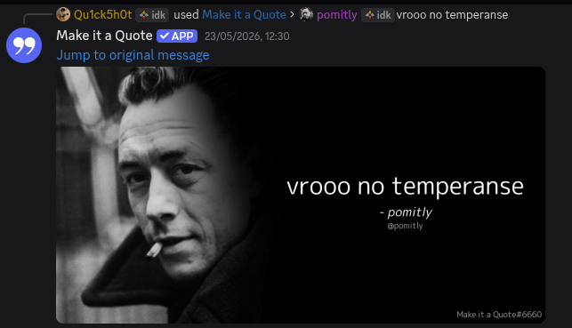
River thinks a Chinese man can’t read kanji:
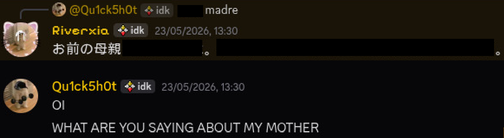
“Yo bro we were 4th place in DEFCON CTF quals… at some point anyway”:
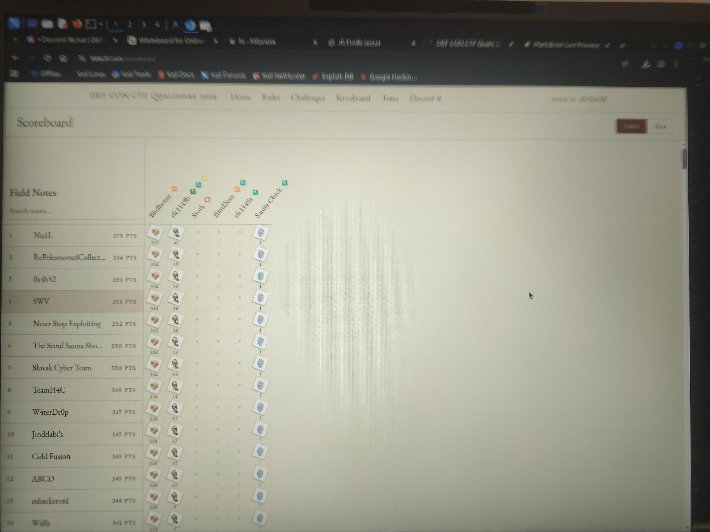
A member of our team that I will not name out of respect, getting hacked mid-CTF:
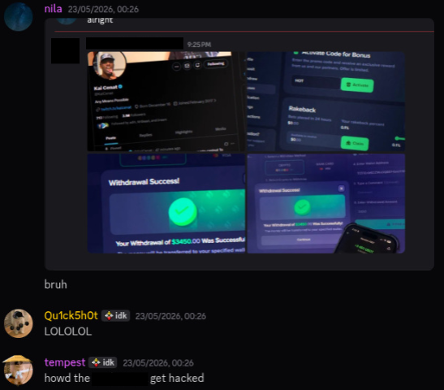
And lastly, a wholesome ending:
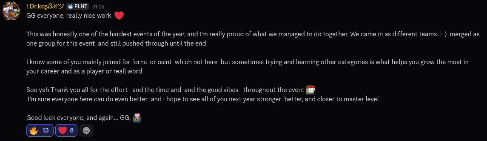